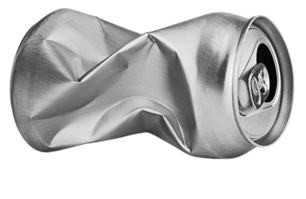
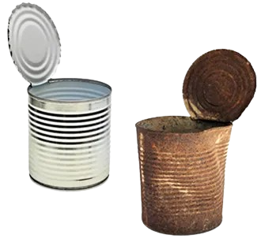

Considere, por exemplo, ao amassar uma lata de alumínio. Esse é um fenômeno físico, pois apenas a aparência, tamanho e formato da lata foram modificados. Entretanto, a sua constituição continua sendo a mesma, ou seja, continua sendo formada por uma liga de alumínio.
Por exemplo, considere uma lata de ferro que é deixada ao ar livre. Com o tempo, ela começa a enferrujar. Nesse caso, não foram alteradas apenas as características físicas do material, mas sim as químicas, pois a ferrugem é uma nova substância que foi formada em uma reação de oxidação e que possui propriedades bem diferentes das do ferro que constituía originalmente a lata.
